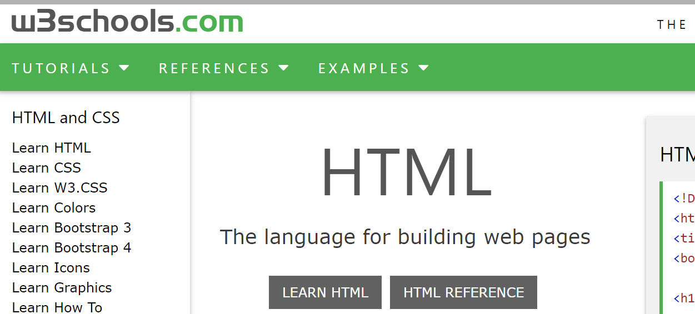

Research
Research is defined as the scientific approach of answering a research question, solving a problem or generating, new knowledge through a systematic and orderly collection, organization, and analysis of information with an ultimate goal of making the research useful in decision-making.
I'M a student of iic(ithari internation college) with university partner london metropolitan university where i study on 1st semister of bsc.(computing). I was fully new about website designing and coding. I have no little bit ideas and knowledge about html,css & javascript, before i joining iic. During the period of coursework this was very energetic, intersting to learn the html,css & javascript syntax.before doing coursework on website designing ,i have study and learn through various sources like tutorial videos , from w3school website & linkedin learning platforms and many more sources when i had used for doing coursework and researching on it. it's very intersting to learn and doing a coding on it. i can get more khownledge now about it. before i joining the iic i have no idea and khowledge about it. i wants to thank iic and other sources which gives me alot of knowledge on html, css and javascripts. now i can made any website easily where i have a lots of knowledge on it.
The websites and tutorial video and more sources that helps me alot for doing this courseworks are given list below:
- Linkedin Learning:
- Edureka
- programming with Mosh
- w3school
- I have Researched in different websites to make this websites are as shown below.

This is the linkedin learning sites where i can learn many things on this site where expert teacher can teach us,
in a simple and understanding ways. any body can learn easily on this sites by any one easily in a short period of
time.
edureka is a channel on youtube who teaches and upload a videos on youtube about may programmings suchas javascript.
html, and css and many more. its helps me lots on doing its.
programming with MOsh is a channel on youtube who teaches and upload a videos on youtube about may programmings suchas javascript.
html, and css and many more. its helps me lots on doing its.

W3Schools is a web developers site, with tutorials and references on web development languages such as HTML, CSS, JavaScript, covering
most aspects of web programming. W3Schools was originally created in 1998, by Refsnes Data, a Norwegian software development and
consulting company.
For hover.

For Cv.

For Contact us.

For Login form.